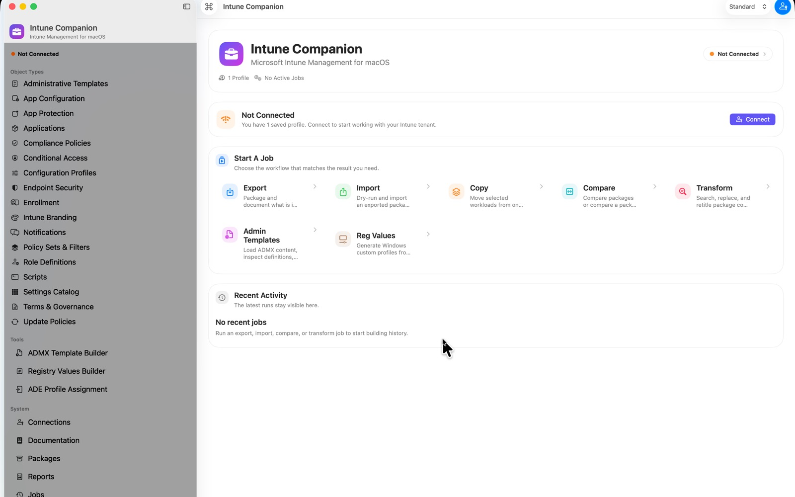

SAB Workspace is built for tenant export, comparison, reuse, and reporting work that is usually awkward to do in scattered browser tabs. These screenshots show the current desktop workflow across the most important admin tasks.
- Start from a focused home workspace instead of portal sprawl
- Move through export, import, compare, and reporting in one native tool
- Generate documentation and executive summaries that are easier to keep and share
